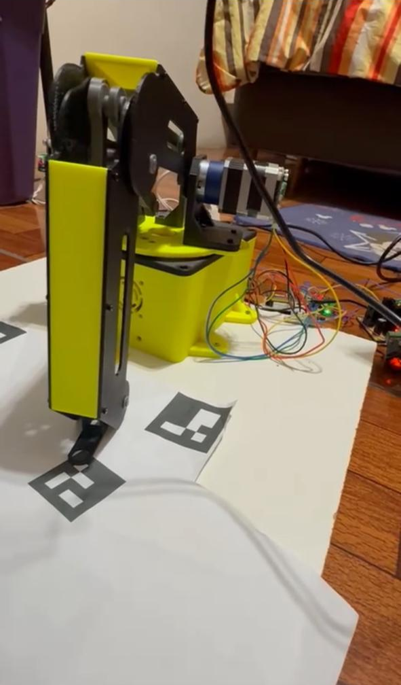
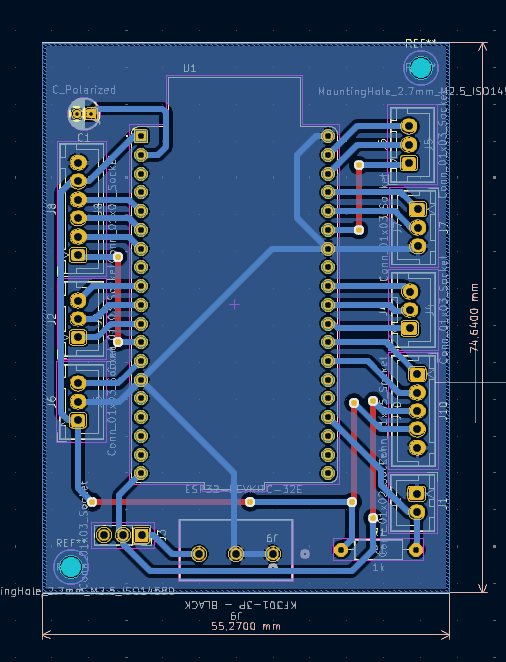
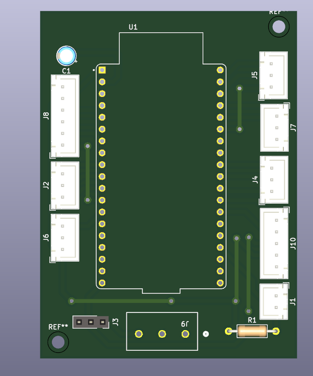
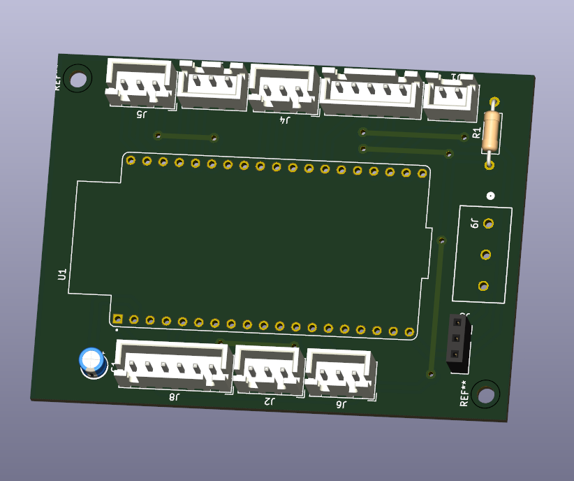
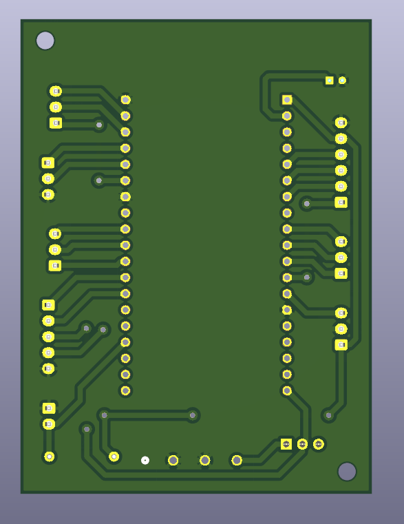

Robotic Arm

Objective
Design and develop the electronic control system, forward and inverse kinematics, embedded control firmware, and computer vision algorithms for a 3-degree-of-freedom (3-DOF) robotic arm capable of operating in both manual and autonomous modes.
Technologies Used
• MATLAB – Forward and inverse kinematics modeling and validation.
• KiCad – Custom PCB design for the robotic arm control system.
• Python – Computer vision algorithm development.
• ESP32 – Main embedded controller.
• Arduino IDE – Firmware development for the ESP32.
My Contributions
• Developed the forward and inverse kinematics of the robotic arm using MATLAB.
• Designed the custom PCB for the electronic control system using KiCad.
Technical Highlights
• 3-degree-of-freedom robotic arm.
• Forward and inverse kinematics implementation.
• Custom-designed control PCB.
• ESP32-based embedded control system.
• Computer vision-assisted autonomous operation.
• Manual and automatic control modes.
Design Phase




Results
Successfully developed a robust electronic control system for a 3-DOF robotic arm capable of both manual and autonomous operation. The integration of computer vision enabled automated task execution, resulting in a reliable and flexible robotic platform.
Year: 2025